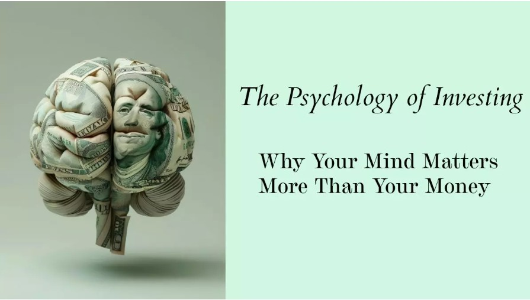

The Psychology Behind Poor Investment Decisions
Investing sounds simple on paper: analyse data, assess risk, and make rational decisions to grow your wealth. But in reality, we’re human—and our emotions often hijack our logic. Even the smartest investors are not immune to fear, greed, or the mental shortcuts our brains take under pressure. That’s where behavioural finance comes in. It sheds light on the subtle ways our psychology influences financial decisions—often more than we realise.
Why We Often Act Against Our Own Interests
Let’s be honest—most of us have felt that pit in our stomachs when markets start to fall. Watching your portfolio shrink can feel like your hard-earned savings are disappearing. The natural instinct? Pull out, cut your losses. A few months later, when the market rebounds, you jump back in. But by then, the real opportunity is often gone.
This kind of emotional back-and-forth is common—and costly. It leads to the classic mistake: buying high and selling low. Not because the numbers told you to, but because your emotions did.
A big driver of this is loss aversion. It’s a cognitive bias that makes the pain of losing money feel far worse than the joy of making it. A 10% dip in your portfolio might feel like a punch in the gut, while a 10% gain barely registers the same emotional high. This discomfort can push investors to bail out of the market during downturns—even when staying put might be the smarter long-term move.
On top of that, there’s recency bias—the tendency to believe that whatever just happened will keep happening. When markets are soaring, we often assume they’ll continue to rise forever. We take on more risk, stretch our budgets, and convince ourselves we’re playing it smart. But markets have a way of reversing just when we feel most confident.
A clear example of this played out during the 2020 COVID-19 crash. As panic spread, many investors halted their SIPs or pulled out entirely. But those who stuck with their plans and stayed invested were rewarded when the markets bounced back. Sadly, many who re-entered later had already missed much of the rally.
And then there’s herd mentality—our instinct to follow the crowd. It feels reassuring to do what everyone else is doing, especially in times of uncertainty. But in investing, this often leads to getting in too late or out too early. What the crowd is doing might not match your own financial needs, goals, or risk tolerance.
How to Stay Grounded When Emotions Take Over
You don’t need to shut off your emotions to be a good investor. But you do need to recognise when they’re steering the wheel. Here are a few ways to bring more clarity and control to your investment journey:
- Stick to a plan. Build an asset allocation strategy that suits your financial goals and risk appetite. This acts as your compass when markets are volatile.
- Automate your investing. SIPs help take emotions out of the equation. By investing a fixed amount regularly, you reduce the temptation to time the market and benefit from cost averaging.
- Rebalance with intention. If your equity holdings grow too large, shift some into debt or other asset classes to maintain your original allocation. It helps you sell high and buy low—exactly the opposite of what your emotions may want.
- Lean on expert guidance. A reliable financial advisor can offer an outside perspective when your instincts start to get in the way. Sometimes, that extra voice of reason makes all the difference.
The Bottom Line
At the end of the day, the biggest factor in your investment success isn't the market—it's you. Your ability to manage your own emotions, biases, and behaviors can make or break your financial future.
So next time you feel the urge to make a big move with your money, pause. Ask yourself: Is this part of my plan, or am I reacting to fear or hype?
The more self-awareness you bring to your investing, the better off you'll be—not just financially, but emotionally too.